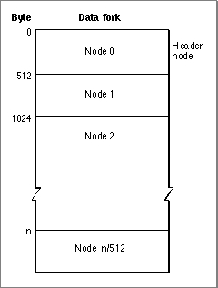
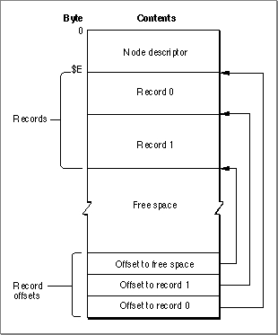
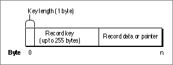
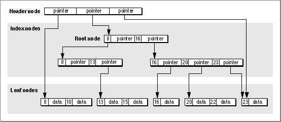
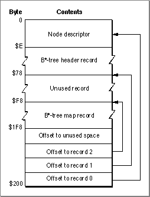

Legacy Document
Important: The information in this document is obsolete and should not be used for new development.
Important: The information in this document is obsolete and should not be used for new development.


B*-Trees
The File Manager maintains information about a volume's directory hierarchy and file block mapping in two files that are organized as B*-trees to allow quick and efficient retrieval of that information. In a B*-tree, all the information that needs to be stored is intelligently classified and sorted into objects called nodes. Figure 2-6 illustrates the general structure of a B*-tree file.Figure 2-6 The structure of a B*-tree file

Note that each B*-tree file used by the File Manager makes use of the data fork only; the resource fork of a B*-tree file is unused. The length of a B*-tree file varies according to the number of nodes it contains.
A node in turn contains records, which can be used for a variety of purposes. Some records contain the actual data that is to be retrieved and possibly updated; these records occupy nodes called leaf nodes. Other records contain information about the structure of the B*-tree. The File Manager uses these records to find the information it needs quickly. There are three types of these "bookkeeping" nodes: header nodes, index nodes, and map nodes.
Nodes
A B*-tree file consists entirely of objects called nodes, each of which is 512 bytes long. Figure 2-7 illustrates the structure of a node.Each node has the same general structure and consists of three main parts: a node descriptor that starts at the beginning of the node, a group of record offsets that starts
at the end of the node, and a group of records.The node descriptor contains information about the node, as well as forward and backward links to other nodes. You can use the
NodeDescriptordata type to display the structure of a node descriptor.
TYPE NodeDescriptor = {node descriptor} RECORD ndFLink: LongInt; {forward link} ndBLink: LongInt; {backward link} ndType: SignedByte; {node type} ndNHeight: SignedByte; {node level} ndNRecs: Integer; {number of records in node} ndResv2: Integer; {reserved} END;Figure 2-7 The structure of a node
A node descriptor is always $0E bytes in length, and so the records contained in the node always begin at offset $0E from the beginning of the node. The size of a record can vary, depending on its type and on the amount of information it contains; as a result, the File Manager accesses a record by storing the offset from the beginning of the node to that record in the list of offsets found at the end of the node. Each offset occupies a word, and (as you might have guessed) the last word in a node always contains the value $0E, pointing to the first record in the node. The offsets to subsequent records are stored in order starting from the end of the node, as illustrated in Figure 2-7.
Field Description
ndFLink- A link to the next node of this type. If this node is the last node, this field contains
NIL.ndBLink- A link to the previous node of this type. If this node is the first node, this field contains
NIL.ndType- The type of this node. Currently four types of nodes are recognized, defined by the constants listed in this section.
ndNHeight- The level or "depth" of this node in the B*-tree hierarchy. The top-level node (a header node, described in "Header Nodes" on page 2-67) always has a level of 0; all other nodes have a level that is one greater than their parent node. Currently, the maximum depth of a node is 8.
ndNRecs- The number of records contained in this node.
ndResv2- Reserved. This field should always be 0.
Note that there is always one more offset than the number of records contained in a node; this is an offset to the beginning of any unused space in the node. If there is no free space in the node, then that offset contains its own byte offset within the node.
The
ndTypefield of the node descriptor indicates the type of a node. In essence, the type of a node indicates what kinds of records it contains and hence what its function in the B*-tree hierarchy is. The File Manager maintains four kinds of nodes in a B*-tree, indicated by constants:
CONST {node types} ndIndxNode = $00; {index node} ndHdrNode = $01; {header node} ndMapNode = $02; {map node} ndLeafNode = $FF; {leaf node}These node types are described in the four sections immediately after the next one.Node Records
A record in a B*-tree node contains either data or a pointer to some other node in the tree. Figure 2-8 shows the general structure of a record in a leaf or index node.Figure 2-8 Structure of a B*-tree node record

Each record contains a search key, which the File Manager uses to search through the B*-tree to locate the information it needs. The key can contain any information at all that is deemed useful in finding the data contained in the leaf nodes. In a catalog file, which maintains information about the hierarchy of files and directories on a volume, the search key is a combination of the file or directory name and the parent directory ID of that file or directory. In an extents overflow file, which maintains information about the extra extents belonging to a file, the search key is a combination of that file's type, its file ID, and the index of the first allocation block in the extent.
- Note
- The three records in a B*-tree header node do not have the structure depicted in Figure 2-8. They consist solely of data, as described in the next section, "Header Nodes." Similarly, the single record in a map node consists solely of data; see "Map Nodes" on page 2-69 for details.

In a B*-tree, the records in each node are always grouped so that their keys are in ascending order. Moreover, the nodes on any given level are linked (through the
ndFLinkandndBLinkfields of their node descriptors) in such a way as to preserve the ascending order of record keys throughout that level. This is the essential ordering principle that allows the File Manager to search quickly through a tree. To illustrate this ordering scheme, Figure 2-9 shows a sample B*-tree containing hypothetical search keys (in this case, the keys are simply integers).When the File Manager needs to find a data record, it begins searching at the root node (which is an index node, unless the tree has only one level), moving from one record to the next until it finds the record with the highest key that is less than or equal to the search key. The pointer of that record leads to another node, one level down in the tree. This process continues until the File Manager reaches a leaf node; then the records of that leaf node are examined until the desired key is found. At that point, the desired data has also been found.

There is of course no guarantee that a record having the desired key will always be found in a search through a B*-tree. In this case, the search stops when a key larger
than the search key is reached. (This is most likely to happen in a search through the catalog file.)Header Nodes
The first node (that is, node 0) in every B*-tree file is a header node, which contains essential information about the entire B*-tree file. The File Manager stores the location of the header node of the catalog file in the first 2 bytes of the drCTExtRec field of the MDB; the value in those 2 bytes indicates the allocation block number on which the catalog file (and hence the header node) begins. Similarly, the File Manager stores the location of the header node of the extents overflow file in the first 2 bytes of the drXTExtRec field of the MDB.
A header node contains three records, the second of which occupies 128 bytes and is reserved for use by the File Manager. The other two records are called the B*-tree header record and the B*-tree map record; they occupy the first and third record positions, respectively. Hence, a header node has the structure illustrated in Figure 2-10.
- Note
- When a volume is mounted, the File Manager reads the header node and copies some of the information it contains into a B*-tree control block in memory. See "B*-Tree Control Blocks" on page 2-83 for a description of this control block.
Figure 2-10 Header node structure

The map record is a bitmap that indicates which nodes in the B*-tree file are used and which are not. The bits are interpreted in exactly the same way as the bits in the volume bitmap: if a bit in the map record is set, then the corresponding node in the B*-tree file is being used. This bitmap occupies 256 bytes and can therefore encode information about 2048 nodes at most. If more nodes are needed to contain all the data that is to be stored in the B*-tree, the File Manager uses a map node to store additional mapping information. See the next section, "Map Nodes," for a description of the structure of a map node.
- Note
- The three records contained in the header node do not contain keys.
The B*-tree header record, a data structure of type
BTHdrRec, contains information about the beginning of the tree, as well as the size of the tree.
TYPE BTHdrRec = {B*-tree header} RECORD bthDepth: Integer; {current depth of tree} bthRoot: LongInt; {number of root node} bthNRecs: LongInt; {number of leaf records in tree} bthFNode: LongInt; {number of first leaf node} bthLNode: LongInt; {number of last leaf node} bthNodeSize: Integer; {size of a node} bthKeyLen: Integer; {maximum length of a key} bthNNodes: LongInt; {total number of nodes in tree} bthFree: LongInt; {number of free nodes} bthResv: ARRAY[1..76] OF SignedByte; {reserved} END;
Field Description
bthDepth- The current depth of the B*-tree.
bthRoot- The node number of the root node. The root node is the start of the B*-tree structure; usually the root node is first index node, but it might be a leaf node if there are no index nodes.
bthNRecs- The number of data records (records contained in leaf nodes).
bthFNode- The node number of the first leaf node.
bthLNode- The node number of the last leaf node.
bthNodeSize- The size (in bytes) of a node. Currently, this is always 512.
bthKeyLen- The maximum length of the key records in each node.
bthNNodes- The total number of nodes in the B*-tree.
bthFree- The total number of free nodes in the B*-tree.
bthResv- Reserved.
Map Nodes
As indicated in the previous section, the File Manager maintains a bitmap of the tree nodes in the map record of the B*-tree header node. If a B*-tree file contains more than 2048 nodes (enough for about 8000 files), the File Manager uses a map node to store additional node-mapping information. It stores the node number of the new map node in thendFLinkfield of the node descriptor of the header node.A map node consists of a node descriptor and a single map record. The map record is a continuation of the map record contained in the header node and occupies 494 bytes
(512 bytes in the node, less 14 bytes for the node descriptor and 2 bytes for each of the two record offsets at the end of the node). A map node can therefore contain mapping information for an additional 3952 nodes.If a B*-tree contains more than 6000 nodes (that is, 2048 + 3952, enough for about 25,000 files), the File Manager uses a second map node, the node number of which is stored in the
ndFLinkfield of the node descriptor of the first map node. If more map nodes are required, each additional map node is similarly linked to the previous one.Index Nodes
An index node contains records that point to other nodes in the B*-tree hierarchy. The File Manager uses index nodes to navigate the tree structure quickly when it wants to find some data (which is always stored in leaf nodes). Index nodes speed a tree search by dividing the tree into smaller pieces, as illustrated in Figure 2-9 (page 2-67).The records stored in an index node are called pointer records. A pointer record consists of a key followed by the node number of the corresponding node. The structure of the key varies according to the type of B*-tree file that contains the index node. For a catalog file, the search key is a combination of the file or directory name and the parent directory ID of that file or directory. In an extents overflow file, the search key is a combination of that file's type, its file ID, and the index of the first allocation block in the extent. See the sections "Catalog File Keys" on page 2-71 and "Extents Overflow Files" on page 2-74 for more details on the structure of index node search keys.
The immediate descendants of an index node are called the children of the index node. An index node can have from 1 to 15 children, depending on the size of the pointer records that the index node contains. Typically the File Manager selects one of the node's children and continues the search at that node; the File Manager may stop the search, however, if the index node does not contain a pointer record with the appropriate key.
The first index node in a B*-tree is called the root node. Recall that the B*-tree
header node contains the node number of the root node in thebthRootfield of
the header record.Leaf Nodes
The bottom level of a B*-tree structure is occupied exclusively by leaf nodes, which contain data records (not pointer records). The structure of the leaf node data records varies according to the type of B*-tree under consideration. In an extents overflow file, the leaf node data records consist of a key and an extent record. In a catalog file (described in the next section), the leaf node data records can be any one of four kinds
of records.